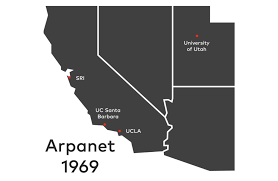

This is the age of the internet. The internet today is a rapidly expanding network of connected people around the world. Almost all technology that surrounds us today is connected to the internet in one way or the other. Today, the internet is used to communicate with others, shop, conduct business, meet people, find information, or anything else the mind can imagine without being constrained to time, or geographical borders. The internet can be used for the good by making our lives easier, or it can be used for war in various ways. It has become the key component of civilization with no supervision or great power officially controlling it.
The internet was first envisioned by a psychologist named J. C. R. Licklider, a professor at the Massachusetts Institute of Technology. His vision was that computers would allow you to communicate better, and that would allow you to connect all the computers together, making them more useful in the sharing of information among people.
The first computers were extremely large in size and were not even meant to communicate. The idea of a worldwide network that would involve computers communicating with each other was something that no one could have imagined.
Telephone lines, cable switches, information packets, data mobility, and computer network steams were setting a foundation for the conception of the internet. Old computers were big machines, with a response-time of nearly 24 hours. In 1966, machines could not talk to each other. Every machine would need a terminal, and terminals were not connected. If you had five machines, you needed five separate terminals to communicate with each machine. That is when Bob Taylor wanted to create a network. His notion was to create a network that would link heterogeneous computers together. Building a computer network became the initiative that started the internet revolution that revamped the computer technology of that time, and the communications infrastructure in the nation.
Bob Taylor’s vision was solidified when ARPANET came into existence. ARPANET was an achievement in the networking revolution, and it definitely was a stepping stone for the invention of the internet, so it is important not to confuse the two. In 1971, the ARPANET had 18 mainframe computers spread between the East Coast and West Coast hooked up to the network. ARPANET made it possible for multiple computers to communicate over a single network, and soon data transmission was also possible on the network through electronic mail, what is known today as e-mail. The ARPANET continued to grow and networks continued to multiply. Local Area Networks and Wide Area Networks began taking form, and the only downside to this was that each new network was foreign to the other. The next question was that could these networks be connected?
This led to the invention of the TCP/IP model. This enabled the networks to interconnect by setting a standard for the transmission of data on multiple networks. The Gateway knew how to communicate with all the networks that it was connected to and made it possible for networks to communicate with each other. This created multiple inter-nets. In 1983, the ARPANET adopted TCP/IP as the universal standard and established a common network of interconnected networks. The network worked well because it created enough commonality and made it possible for computers to communicate with each other.
The ARPANET was developed for defense research as it was originally funded by the US Department of Defense. Individuals and businesses were not given the luxury to be interconnected. As private networks flourished for certain individuals and businesses, the internet was still not accessible by everyone.
The internet grew and being accessible due to multiple efforts, and technological and electronic breakthroughs. What used to be an immobile machine that occupied a lot of space because of its enormous size thanks to the silicone chip and high-speed modems that aided in the compilation of the desktop computers. However, technology did not make the internet accessible for everyone, it was politicians that made that possible. Congress was deciding to open the internet to the world when Tim Berners Lee developed software to make the internet more accessible to all users.
This software became a worldwide phenomenon known as the World Wide Web. The purpose of the Web was to make the internet more accessible through the help of websites and hyperlinks. Although it was not very user friendly at first, Tim made the internet more accessible for the daily user. A year later, a web browser known as Mosaic was developed by Mark Andreesen from the University of Illinois. This became known as Netscape. The innovations enabled access to the Web and made it a lot easier for people to access the content of the Web.
In 1993, the Web grew by 341,000% thanks to technological advances that made it possible for users to scroll through images and navigate through different pages. By the end of the century, every user of the internet had a portal to the world in the comfort of their own homes.
{kind=link}
{kind=link}